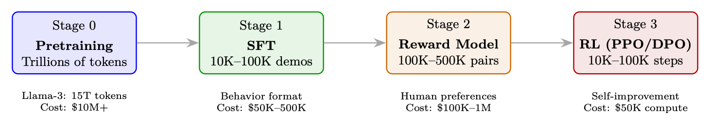

<!doctype html>
<html lang="zh-CN">
<head>
  <meta charset="utf-8" />
  <meta name="viewport" content="width=device-width, initial-scale=1" />
  <title>PPO：近端策略优化 | 智能体式 AI 漫游指南</title>
  <meta name="description" content="解释 PPO 的目标函数、优势估计、KL 控制和生产训练实践。" />
  <meta property="og:title" content="PPO：近端策略优化 | 智能体式 AI 漫游指南" />
  <meta property="og:description" content="解释 PPO 的目标函数、优势估计、KL 控制和生产训练实践。" />
  <meta property="og:type" content="article" />
  <link rel="canonical" href="https://conanxin.github.io/hitchhikers-guide-agentic-ai-zh/" />
  <link rel="stylesheet" href="../assets/css/main.css" />
  <link rel="stylesheet" href="../assets/css/article.css" />
  <link rel="stylesheet" href="../assets/css/responsive.css" />
</head>
<body class="article-page">
  <div class="reading-progress" id="reading-progress"></div>
  <header class="topbar">
    <a class="brand" href="../index.html"><span class="brand-mark">AST</span><span><strong>智能体式 AI 漫游指南</strong><small>结构化知识文档系统</small></span></a>
    <button class="nav-toggle" id="nav-toggle" aria-label="打开导航" aria-expanded="false"><span></span><span></span><span></span></button>
    <nav class="topnav" id="topnav"><a class="" href="../index.html">首页</a><a class="active" href="../chapters/index.html">章节</a><a class="" href="../glossary.html">术语表</a><a class="" href="../references.html">参考文献</a><a class="" href="../search.html">搜索</a><a class="" href="https://arxiv.org/pdf/2606.24937v1" target="_blank" rel="noopener">原 PDF</a></nav>
  </header>
  <main class="layout"><aside class="left-nav" id="left-nav"><div class="nav-section-title">语义目录</div><div class="nav-cluster"><strong>导读</strong><a class="chapter-link " href="../chapters/chapter-01.html"><span class="chapter-num">01</span><span>导读与前置说明</span></a><a class="chapter-link " href="../chapters/chapter-09.html"><span class="chapter-num">09</span><span>偏好优化变体</span></a></div><div class="nav-cluster"><strong>LLM 基础与系统</strong><a class="chapter-link " href="../chapters/chapter-02.html"><span class="chapter-num">02</span><span>LLM 架构和优化方法</span></a><a class="chapter-link " href="../chapters/chapter-03.html"><span class="chapter-num">03</span><span>LLM 的系统基础</span></a><a class="chapter-link " href="../chapters/chapter-12.html"><span class="chapter-num">12</span><span>大规模系统架构与基础设施</span></a></div><div class="nav-cluster"><strong>训练、强化学习与对齐</strong><a class="chapter-link " href="../chapters/chapter-04.html"><span class="chapter-num">04</span><span>强化学习简介</span></a><a class="chapter-link " href="../chapters/chapter-05.html"><span class="chapter-num">05</span><span>语言模型的强化学习基础</span></a><a class="chapter-link active" href="../chapters/chapter-06.html"><span class="chapter-num">06</span><span>PPO：近端策略优化</span></a><a class="chapter-link " href="../chapters/chapter-07.html"><span class="chapter-num">07</span><span>DPO：直接偏好优化</span></a><a class="chapter-link " href="../chapters/chapter-08.html"><span class="chapter-num">08</span><span>GRPO：组相对策略优化</span></a><a class="chapter-link " href="../chapters/chapter-10.html"><span class="chapter-num">10</span><span>奖励模型训练</span></a><a class="chapter-link " href="../chapters/chapter-11.html"><span class="chapter-num">11</span><span>SFT 最佳实践与技术</span></a><a class="chapter-link " href="../chapters/chapter-14.html"><span class="chapter-num">14</span><span>大型推理模型的强化学习</span></a></div><div class="nav-cluster"><strong>Agentic AI 系统</strong><a class="chapter-link " href="../chapters/chapter-13.html"><span class="chapter-num">13</span><span>LLM 智能体训练</span></a><a class="chapter-link " href="../chapters/chapter-16.html"><span class="chapter-num">16</span><span>智能体式 AI 简介</span></a><a class="chapter-link " href="../chapters/chapter-17.html"><span class="chapter-num">17</span><span>检索增强生成（RAG）</span></a><a class="chapter-link " href="../chapters/chapter-18.html"><span class="chapter-num">18</span><span>智能体记忆系统</span></a><a class="chapter-link " href="../chapters/chapter-19.html"><span class="chapter-num">19</span><span>智能体执行框架：上下文管理与编排</span></a><a class="chapter-link " href="../chapters/chapter-20.html"><span class="chapter-num">20</span><span>智能体设计模式</span></a><a class="chapter-link " href="../chapters/chapter-21.html"><span class="chapter-num">21</span><span>智能体环境与基准</span></a><a class="chapter-link " href="../chapters/chapter-22.html"><span class="chapter-num">22</span><span>模型上下文协议（MCP）</span></a><a class="chapter-link " href="../chapters/chapter-23.html"><span class="chapter-num">23</span><span>智能体技能</span></a><a class="chapter-link " href="../chapters/chapter-24.html"><span class="chapter-num">24</span><span>智能体间通信（A2A）</span></a><a class="chapter-link " href="../chapters/chapter-25.html"><span class="chapter-num">25</span><span>多智能体系统</span></a><a class="chapter-link " href="../chapters/chapter-26.html"><span class="chapter-num">26</span><span>智能体开发框架</span></a><a class="chapter-link " href="../chapters/chapter-27.html"><span class="chapter-num">27</span><span>智能体式 UI 框架</span></a></div><div class="nav-cluster"><strong>推理与评估</strong><a class="chapter-link " href="../chapters/chapter-15.html"><span class="chapter-num">15</span><span>LLM 评估</span></a></div><div class="nav-cluster"><strong>参考与总结</strong><a class="chapter-link " href="../chapters/chapter-28.html"><span class="chapter-num">28</span><span>测验题与详解</span></a><a class="chapter-link " href="../chapters/chapter-29.html"><span class="chapter-num">29</span><span>速查表</span></a><a class="chapter-link " href="../chapters/chapter-30.html"><span class="chapter-num">30</span><span>结论与未来方向</span></a></div></aside><section class="content-shell">
        <article class="article-card" data-ast-source="../assets/data/clean_chapter_tree.json">
          <header class="article-header">
            <p class="part-label">训练、强化学习与对齐</p>
            <h1>PPO：近端策略优化</h1>
            <p>解释 PPO 的目标函数、优势估计、KL 控制和生产训练实践。</p>
          </header>
          <aside class="component key-concepts-panel"><span class="component-label">Key Concepts</span><div class="concept-chip"><strong>智能体</strong><span>Agent</span><p>能够感知状态、规划行动、调用工具并迭代完成任务的系统单元。</p></div><div class="concept-chip"><strong>标记 / token</strong><span>Token</span><p>语言模型处理文本的基本离散单位。</p></div><div class="concept-chip"><strong>Transformer</strong><span>Transformer</span><p>以自注意力为核心的序列建模架构。</p></div><div class="concept-chip"><strong>强化学习</strong><span>Reinforcement Learning</span><p>通过奖励信号优化策略的学习范式。</p></div><div class="concept-chip"><strong>奖励模型</strong><span>Reward Model</span><p>把候选输出映射为偏好或质量分数的模型。</p></div><div class="concept-chip"><strong>策略</strong><span>Policy</span><p>在状态下选择动作或生成 token 的概率分布。</p></div><div class="concept-chip"><strong>轨迹</strong><span>Trajectory</span><p>智能体与环境交互形成的状态、动作、观察和奖励序列。</p></div><div class="concept-chip"><strong>缓冲区</strong><span>Buffer</span><p>保存经验、轨迹或中间数据以供训练和分析的结构。</p></div></aside>
          <div class="article-body"><section class="ast-section" id="chapter-06-s01"><div class="component section-overview"><div><span class="component-label">Section Overview</span><h2>动机与历史</h2><p>本节聚焦“动机与历史”的定义、机制与工程含义。</p></div><div class="mini-concepts"><div class="concept-chip"><strong>智能体</strong><span>Agent</span><p>能够感知状态、规划行动、调用工具并迭代完成任务的系统单元。</p></div><div class="concept-chip"><strong>策略</strong><span>Policy</span><p>在状态下选择动作或生成 token 的概率分布。</p></div><div class="concept-chip"><strong>近端策略优化（PPO）</strong><span>PPO</span><p>通过裁剪目标限制策略更新幅度的强化学习算法。</p></div></div></div><div class="section-blocks"><p class="content-block paragraph">动机和历史</p><p class="content-block paragraph">问题：普通策略梯度更新对步长没有限制。不幸的一批 可以将政策推向产生垃圾的地区→垃圾获得低奖励→下一步 梯度使事情变得更糟→不可恢复的崩溃。 解决方案历史：</p><p class="content-block paragraph">1. TRPO [167] (2015)：限制新旧政策之间的 KL 分歧。工作完美但是 需要昂贵的二阶优化（Fisher 信息矩阵、共轭梯度）。</p><p class="content-block paragraph">2. PPO (2017) [168]：通过简单的一阶限幅目标实现类似的稳定性。 10× 实现起来更简单，效果也几乎一样，可以轻松地扩展到分布式训练。</p><p class="content-block paragraph">被剪裁的目标</p><p class="content-block paragraph">PPO 的核心创新是一个截断的替代目标，可以防止破坏性的大型政策 更新，同时保持易于实施。</p><p class="content-block paragraph">(5.1)</p><div class="component formula-component" data-fallback="latex"><div class="block-label">公式</div><pre class="formula"><code>LCLIP(θ) = Et h min  rt(θ) ˆAt, clip(rt(θ), 1−ϵ, 1+ϵ) ˆAt i</code></pre></div><div class="component formula-component" data-fallback="latex"><div class="block-label">公式</div><pre class="formula"><code>where rt(θ) = πθ(at|st) πθold(at|st) is the probability ratio.</code></pre></div><p class="content-block paragraph">剪裁直觉——关键洞察</p><p class="content-block paragraph">min 运算符创建一个悲观界限：</p><p class="content-block paragraph">• 良好的行动（^A &gt; 0）：我们希望增加其概率。智能体 r ˆA 随着 r 的增长而增长</p><div class="component code-component"><div class="block-label">text</div><pre><code>增加。但夹帽在 r = 1 + ϵ 时受益。 “不要贪图一个好例子。”</code></pre></div><p class="content-block paragraph">• 不良行为（^A &lt; 0）：我们希望降低其概率。 r ˆA 随着 r 的减小而提高。但是</p><div class="component code-component"><div class="block-label">text</div><pre><code>夹帽在 r = 1 −ϵ 时受益。 “不要因为一个坏例子就忘记太激进。”</code></pre></div><p class="content-block paragraph">净效应：每次更新步骤政策变化最多 ±20%。防止灾难性崩溃 以及过于自信的专业化。</p><p class="content-block paragraph">完全 PPO 损失</p><p class="content-block paragraph">(5.2)</p><div class="component code-component"><div class="block-label">text</div><pre><code>+c2 H[πθ(·|st)]
|
{z
}
entropy bonus</code></pre></div><div class="component code-component"><div class="block-label">text</div><pre><code>L = LCLIP −c1 (Vθ(st) −V 目标</code></pre></div><p class="content-block paragraph">t )2 | {z } 价值损失</p><div class="component code-component"><div class="block-label">text</div><pre><code>• 价值损失（c1 = 0.1）：训练批评者预测回报。还进行了修剪以保持稳定性。</code></pre></div></div></section><section class="ast-section" id="chapter-06-s02"><div class="component section-overview"><div><span class="component-label">Section Overview</span><h2>裁剪目标函数</h2><p>本节聚焦“裁剪目标函数”的定义、机制与工程含义。</p></div><div class="mini-concepts"><div class="concept-chip"><strong>智能体</strong><span>Agent</span><p>能够感知状态、规划行动、调用工具并迭代完成任务的系统单元。</p></div><div class="concept-chip"><strong>策略</strong><span>Policy</span><p>在状态下选择动作或生成 token 的概率分布。</p></div><div class="concept-chip"><strong>近端策略优化（PPO）</strong><span>PPO</span><p>通过裁剪目标限制策略更新幅度的强化学习算法。</p></div></div></div><div class="section-blocks"><p class="content-block paragraph">动机和历史</p><p class="content-block paragraph">问题：普通策略梯度更新对步长没有限制。不幸的一批 可以将政策推向产生垃圾的地区→垃圾获得低奖励→下一步 梯度使事情变得更糟→不可恢复的崩溃。 解决方案历史：</p><p class="content-block paragraph">1. TRPO [167] (2015)：限制新旧政策之间的 KL 分歧。工作完美但是 需要昂贵的二阶优化（Fisher 信息矩阵、共轭梯度）。</p><p class="content-block paragraph">2. PPO (2017) [168]：通过简单的一阶限幅目标实现类似的稳定性。 10× 实现起来更简单，效果也几乎一样，可以轻松地扩展到分布式训练。</p><p class="content-block paragraph">被剪裁的目标</p><p class="content-block paragraph">PPO 的核心创新是一个截断的替代目标，可以防止破坏性的大型政策 更新，同时保持易于实施。</p><p class="content-block paragraph">(5.1)</p><div class="component formula-component" data-fallback="latex"><div class="block-label">公式</div><pre class="formula"><code>LCLIP(θ) = Et h min  rt(θ) ˆAt, clip(rt(θ), 1−ϵ, 1+ϵ) ˆAt i</code></pre></div><div class="component formula-component" data-fallback="latex"><div class="block-label">公式</div><pre class="formula"><code>where rt(θ) = πθ(at|st) πθold(at|st) is the probability ratio.</code></pre></div><p class="content-block paragraph">剪裁直觉——关键洞察</p><p class="content-block paragraph">min 运算符创建一个悲观界限：</p><p class="content-block paragraph">• 良好的行动（^A &gt; 0）：我们希望增加其概率。智能体 r ˆA 随着 r 的增长而增长</p><div class="component code-component"><div class="block-label">text</div><pre><code>增加。但夹帽在 r = 1 + ϵ 时受益。 “不要贪图一个好例子。”</code></pre></div><p class="content-block paragraph">• 不良行为（^A &lt; 0）：我们希望降低其概率。 r ˆA 随着 r 的减小而提高。但是</p><div class="component code-component"><div class="block-label">text</div><pre><code>夹帽在 r = 1 −ϵ 时受益。 “不要因为一个坏例子就忘记太激进。”</code></pre></div><p class="content-block paragraph">净效应：每次更新步骤政策变化最多 ±20%。防止灾难性崩溃 以及过于自信的专业化。</p><p class="content-block paragraph">完全 PPO 损失</p><p class="content-block paragraph">(5.2)</p><div class="component code-component"><div class="block-label">text</div><pre><code>+c2 H[πθ(·|st)]
|
{z
}
entropy bonus</code></pre></div><div class="component code-component"><div class="block-label">text</div><pre><code>L = LCLIP −c1 (Vθ(st) −V 目标</code></pre></div><p class="content-block paragraph">t )2 | {z } 价值损失</p><div class="component code-component"><div class="block-label">text</div><pre><code>• 价值损失（c1 = 0.1）：训练批评者预测回报。还进行了修剪以保持稳定性。</code></pre></div></div></section><section class="ast-section" id="chapter-06-s03"><div class="component section-overview"><div><span class="component-label">Section Overview</span><h2>完整 PPO 损失</h2><p>本节聚焦“完整 PPO 损失”的定义、机制与工程含义。</p></div><div class="mini-concepts"><div class="concept-chip"><strong>智能体</strong><span>Agent</span><p>能够感知状态、规划行动、调用工具并迭代完成任务的系统单元。</p></div><div class="concept-chip"><strong>策略</strong><span>Policy</span><p>在状态下选择动作或生成 token 的概率分布。</p></div><div class="concept-chip"><strong>近端策略优化（PPO）</strong><span>PPO</span><p>通过裁剪目标限制策略更新幅度的强化学习算法。</p></div></div></div><div class="section-blocks"><p class="content-block paragraph">动机和历史</p><p class="content-block paragraph">问题：普通策略梯度更新对步长没有限制。不幸的一批 可以将政策推向产生垃圾的地区→垃圾获得低奖励→下一步 梯度使事情变得更糟→不可恢复的崩溃。 解决方案历史：</p><p class="content-block paragraph">1. TRPO [167] (2015)：限制新旧政策之间的 KL 分歧。工作完美但是 需要昂贵的二阶优化（Fisher 信息矩阵、共轭梯度）。</p><p class="content-block paragraph">2. PPO (2017) [168]：通过简单的一阶限幅目标实现类似的稳定性。 10× 实现起来更简单，效果也几乎一样，可以轻松地扩展到分布式训练。</p><p class="content-block paragraph">被剪裁的目标</p><p class="content-block paragraph">PPO 的核心创新是一个截断的替代目标，可以防止破坏性的大型政策 更新，同时保持易于实施。</p><p class="content-block paragraph">(5.1)</p><div class="component formula-component" data-fallback="latex"><div class="block-label">公式</div><pre class="formula"><code>LCLIP(θ) = Et h min  rt(θ) ˆAt, clip(rt(θ), 1−ϵ, 1+ϵ) ˆAt i</code></pre></div><div class="component formula-component" data-fallback="latex"><div class="block-label">公式</div><pre class="formula"><code>where rt(θ) = πθ(at|st) πθold(at|st) is the probability ratio.</code></pre></div><p class="content-block paragraph">剪裁直觉——关键洞察</p><p class="content-block paragraph">min 运算符创建一个悲观界限：</p><p class="content-block paragraph">• 良好的行动（^A &gt; 0）：我们希望增加其概率。智能体 r ˆA 随着 r 的增长而增长</p><div class="component code-component"><div class="block-label">text</div><pre><code>增加。但夹帽在 r = 1 + ϵ 时受益。 “不要贪图一个好例子。”</code></pre></div><p class="content-block paragraph">• 不良行为（^A &lt; 0）：我们希望降低其概率。 r ˆA 随着 r 的减小而提高。但是</p><div class="component code-component"><div class="block-label">text</div><pre><code>夹帽在 r = 1 −ϵ 时受益。 “不要因为一个坏例子就忘记太激进。”</code></pre></div><p class="content-block paragraph">净效应：每次更新步骤政策变化最多 ±20%。防止灾难性崩溃 以及过于自信的专业化。</p><p class="content-block paragraph">完全 PPO 损失</p><p class="content-block paragraph">(5.2)</p><div class="component code-component"><div class="block-label">text</div><pre><code>+c2 H[πθ(·|st)]
|
{z
}
entropy bonus</code></pre></div><div class="component code-component"><div class="block-label">text</div><pre><code>L = LCLIP −c1 (Vθ(st) −V 目标</code></pre></div><p class="content-block paragraph">t )2 | {z } 价值损失</p><div class="component code-component"><div class="block-label">text</div><pre><code>• 价值损失（c1 = 0.1）：训练批评者预测回报。还进行了修剪以保持稳定性。</code></pre></div></div></section><section class="ast-section" id="chapter-06-s04"><div class="component section-overview"><div><span class="component-label">Section Overview</span><h2>PPO 梯度与更新规则推导</h2><p>本节聚焦“PPO 梯度与更新规则推导”的定义、机制与工程含义。</p></div><div class="mini-concepts"><div class="concept-chip"><strong>智能体</strong><span>Agent</span><p>能够感知状态、规划行动、调用工具并迭代完成任务的系统单元。</p></div><div class="concept-chip"><strong>强化学习</strong><span>Reinforcement Learning</span><p>通过奖励信号优化策略的学习范式。</p></div><div class="concept-chip"><strong>奖励模型</strong><span>Reward Model</span><p>把候选输出映射为偏好或质量分数的模型。</p></div><div class="concept-chip"><strong>策略</strong><span>Policy</span><p>在状态下选择动作或生成 token 的概率分布。</p></div><div class="concept-chip"><strong>近端策略优化（PPO）</strong><span>PPO</span><p>通过裁剪目标限制策略更新幅度的强化学习算法。</p></div></div></div><div class="section-blocks"><div class="component code-component"><div class="block-label">text</div><pre><code>• 熵红利(c2 = 0.01)：防止过早收敛到确定性策略。关键</code></pre></div><p class="content-block paragraph">用于探索。</p><p class="content-block paragraph">PPO梯度的推导及更新规则</p><p class="content-block paragraph">本节追踪从 RL 目标到 PPO 更新规则的数学路径，显示 为什么修剪的智能体有效。</p><p class="content-block paragraph">第 1 步：强化学习目标</p><p class="content-block paragraph">目标是最大化政策下的预期累积奖励：</p><p class="content-block paragraph">” T X</p><p class="content-block paragraph">(5.3)</p><div class="component formula-component" data-fallback="latex"><div class="block-label">公式</div><pre class="formula"><code>J(θ) = Eτ∼πθ</code></pre></div><p class="content-block paragraph">时间=0 室温</p><p class="content-block paragraph">第二步：策略梯度定理</p><p class="content-block paragraph">J(θ)相对于策略参数的梯度：</p><p class="content-block paragraph">” T X</p><p class="content-block paragraph">(5.4)</p><div class="component formula-component" data-fallback="latex"><div class="block-label">公式</div><pre class="formula"><code>∇θJ(θ) = Eπθ</code></pre></div><div class="component formula-component" data-fallback="latex"><div class="block-label">公式</div><pre class="formula"><code>t=0 ∇θ log πθ(at|st) · ˆAt</code></pre></div><p class="content-block paragraph">其中 ^At 是优势函数（与平均水平相比，at 的动作好多少） 状态 st 中的动作）。这用减少方差的优势取代了全部回报。</p><p class="content-block paragraph">步骤 3：离策略数据的重要性采样</p><div class="component formula-component" data-fallback="latex"><div class="block-label">公式</div><pre class="formula"><code>PPO collects data using πθold but updates πθ. To correct for this distribution mismatch, apply importance sampling:</code></pre></div><p class="content-block paragraph">(5.5)</p><div class="component formula-component" data-fallback="latex"><div class="block-label">公式</div><pre class="formula"><code>∇θJ(θ) = Eπθold</code></pre></div><div class="component formula-component" data-fallback="latex"><div class="block-label">公式</div><pre class="formula"><code>&quot; πθ(at|st) πθold(at|st)∇θ log πθ(at|st) · ˆAt</code></pre></div><p class="content-block paragraph">f，我们得到：</p><div class="component formula-component" data-fallback="latex"><div class="block-label">公式</div><pre class="formula"><code>Define the probability ratio rt(θ) = πθ(at|st) πθold(at|st). Using the identity ∇θ log f = ∇θf</code></pre></div><div class="component formula-component" data-fallback="latex"><div class="block-label">公式</div><pre class="formula"><code>h ∇θ rt(θ) · ˆAt i (5.6)</code></pre></div><div class="component formula-component" data-fallback="latex"><div class="block-label">公式</div><pre class="formula"><code>∇θJ(θ) = Eπθold</code></pre></div><p class="content-block paragraph">这意味着最大化替代目标：</p><div class="component formula-component" data-fallback="latex"><div class="block-label">公式</div><pre class="formula"><code>LCPI(θ) = Et h rt(θ) · ˆAt i (5.7)</code></pre></div><p class="content-block paragraph">第四步：无约束智能体的问题</p><p class="content-block paragraph">LCPI 是一个有效的目标，但在没有约束的情况下，单个梯度步骤可以将 rt(θ) 推离 1.0， 导致：</p><p class="content-block paragraph">• 重要性权重变得极端→高方差</p><p class="content-block paragraph">• 政策进入未经测试的地区→奖励模型给出不可靠的分数</p><p class="content-block paragraph">• 灾难性崩溃：政策产生垃圾，无法恢复</p><div class="component formula-component" data-fallback="latex"><div class="block-label">公式</div><pre class="formula"><code>TRPO solution: Constrain DKL(πθold∥πθ) ≤δ. Requires second-order methods (expensive).</code></pre></div></div></section><section class="ast-section" id="chapter-06-s05"><div class="component section-overview"><div><span class="component-label">Section Overview</span><h2>Rollout 缓冲区与采样轨迹</h2><p>本节聚焦“Rollout 缓冲区与采样轨迹”的定义、机制与工程含义。</p></div><div class="mini-concepts"><div class="concept-chip"><strong>智能体</strong><span>Agent</span><p>能够感知状态、规划行动、调用工具并迭代完成任务的系统单元。</p></div><div class="concept-chip"><strong>标记 / token</strong><span>Token</span><p>语言模型处理文本的基本离散单位。</p></div><div class="concept-chip"><strong>奖励模型</strong><span>Reward Model</span><p>把候选输出映射为偏好或质量分数的模型。</p></div><div class="concept-chip"><strong>策略</strong><span>Policy</span><p>在状态下选择动作或生成 token 的概率分布。</p></div><div class="concept-chip"><strong>轨迹</strong><span>Trajectory</span><p>智能体与环境交互形成的状态、动作、观察和奖励序列。</p></div></div></div><div class="section-blocks"><p class="content-block paragraph">第 5 步：PPO 的截断智能体（一阶近似）</p><p class="content-block paragraph">PPO 将硬 KL 约束替换为剪裁目标，该目标使用以下方法实现类似的行为 仅一阶梯度：</p><p class="content-block paragraph">(5.8)</p><div class="component formula-component" data-fallback="latex"><div class="block-label">公式</div><pre class="formula"><code>LCLIP(θ) = Et h min  rt(θ) ˆAt, clip(rt(θ), 1−ϵ, 1+ϵ) ˆAt i</code></pre></div><div class="component code-component"><div class="block-label">text</div><pre><code>Derivation of the gradient:</code></pre></div><div class="component code-component"><div class="block-label">text</div><pre><code>Let Lt = min(rt ˆAt, ¯rt ˆAt) where ¯rt = clip(rt, 1−ϵ, 1+ϵ).</code></pre></div><p class="content-block paragraph">∇θLt =</p><div class="component formula-component" data-fallback="latex"><div class="block-label">公式</div><pre class="formula"><code>( ∇θrt(θ) · ˆAt if rt ˆAt &lt; ¯rt ˆAt (unclipped term is smaller) 0 if rt ˆAt ≥¯rt ˆAt (clipped term is smaller, gradient = 0) (5.9)</code></pre></div><p class="content-block paragraph">扩大条件：</p><div class="component formula-component" data-fallback="latex"><div class="block-label">公式</div><pre class="formula"><code>• When ˆAt &gt; 0 and rt &lt; 1 + ϵ: Gradient flows normally — policy is encouraged to increase πθ(at|st).</code></pre></div><p class="content-block paragraph">• 当 ˆAt &gt; 0 且 rt ≥1 + ϵ 时：梯度为零——策略已经增加得足够多，停止 推动。</p><div class="component formula-component" data-fallback="latex"><div class="block-label">公式</div><pre class="formula"><code>• When ˆAt &lt; 0 and rt &gt; 1 −ϵ: Gradient flows normally — policy is encouraged to decrease πθ(at|st).</code></pre></div><p class="content-block paragraph">• 当 ˆAt &lt; 0 且 rt ≤1 −ϵ 时：梯度为零 — 策略已经下降得足够多，停止 推动。</p><p class="content-block paragraph">第 6 步：完整的 PPO 更新规则</p><p class="content-block paragraph">结合剪裁的策略损失、价值损失和熵奖励：</p><p class="content-block paragraph">(5.10)</p><div class="component formula-component" data-fallback="latex"><div class="block-label">公式</div><pre class="formula"><code>θk+1 = θk + α · ∇θ h LCLIP(θ) −c1LVF(θ) + c2H[πθ] i</code></pre></div><div class="component code-component"><div class="block-label">text</div><pre><code>where:</code></pre></div><p class="content-block paragraph">LVF(θ) =  Vθ(st) −V target t</p><div class="component formula-component" data-fallback="latex"><div class="block-label">公式</div><pre class="formula"><code>2</code></pre></div><p class="content-block paragraph">(value function regression loss) (5.11)</p><p class="content-block paragraph">H[πθ] = − X</p><div class="component formula-component" data-fallback="latex"><div class="block-label">公式</div><pre class="formula"><code>a πθ(a|st) log πθ(a|st) (entropy of the policy) (5.12)</code></pre></div><p class="content-block paragraph">摘要：为什么这有效</p><p class="content-block paragraph">1. 政策梯度定理给我们改进政策的方向。</p><p class="content-block paragraph">2. 重要性采样让我们可以在多个时期重复使用 πθold 的数据。</p><p class="content-block paragraph">3. 剪裁可防止重要性权重变得极端，从而保证更新安全。</p><p class="content-block paragraph">4. min 运算符确保我们始终采用（剪裁、未剪裁）中更保守的一个 — 改善的悲观下限。</p><p class="content-block paragraph">5. 结果：仅使用一阶梯度以概率 1 进行单调改进。否 Hessians，没有共轭梯度，没有线搜索。</p><p class="content-block paragraph">转出缓冲区和转出</p><p class="content-block paragraph">在 PPO 中，数据管理依赖于称为 Rollout 的专门的短期存储系统 缓冲器。与在重放缓冲区中无限期存储体验的离策略算法 (DQN) 不同， PPO 需要一个临时结构来满足其在策略数学约束。</p><p class="content-block paragraph">什么是推出？</p><p class="content-block paragraph">推出（轨迹）是由运行当前策略的智能体生成的一系列交互 在环境中：</p><p class="content-block paragraph">• 过程：智能体观察状态，选择动作，接收奖励，然后移动到 下一个状态。它会重复固定的步数或直到剧集结束。</p><p class="content-block paragraph">• 在LLM/RLHF 中：推出包括从数据集中获取提示并让语言 模型逐个标记生成完整的标记序列，直到命中文本结束标记。 每个token都是一个“步骤”。</p><p class="content-block paragraph">推出缓冲区</p><p class="content-block paragraph">转出缓冲区临时存储转出阶段收集的所有数据。对于每个生成的 token/step，它记录：</p><div class="component code-component"><div class="block-label">text</div><pre><code>B = {(st, at, log πθold(at|st), rt, V (st))}T
t=1
(5.13)</code></pre></div><p class="content-block paragraph">• st、at、rt：步骤t 的状态、采取的行动和奖励。</p><p class="content-block paragraph">log πθold(at|st)：在生成该操作的确切策略下采取该操作的对数概率 （比率计算所需）。</p><p class="content-block paragraph">• V (st)：价值函数的基线预测（GAE 优势计算所需）。</p><p class="content-block paragraph">推出缓冲区生命周期</p><p class="content-block paragraph">缓冲器以严格的三相时钟周期运行：</p><p class="content-block paragraph">1. 收集：主动策略与环境交互，用新的轨迹填充缓冲区</p><div class="component code-component"><div class="block-label">text</div><pre><code>（对于批次 = 128、max_tokens = 512 的 70B 模型：每个最多 65K token级转换</code></pre></div><p class="content-block paragraph">推出）。</p><p class="content-block paragraph">2. 训练：计算跨轨迹的 GAE 优势。运行 K 个周期（通常为 3–10） 小批量梯度下降使用修剪的目标来更新策略权重。</p><p class="content-block paragraph">3. 清除：整个缓冲区被彻底擦拭干净。由于 PPO 符合政策，数据 旧策略生成的数据无法在下一个更新周期安全地重用——比率 rt(θ) 将会变得陈旧并且剪裁保证将会被打破。</p><p class="content-block paragraph">转出缓冲区与重播缓冲区</p><p class="content-block paragraph">重播缓冲区（DQN、SAC）：离策略。无限期地存储数百万个过渡。随机 抽样。在许多更新中重复使用数据。 转出缓冲区（PPO、GRPO）：按策略。存储一批轨迹。用于几个 纪元，然后完全丢弃。每个周期都需要新鲜数据。 这就是为什么 PPO 需要连续生成——每次更新后缓冲区都会被清空， 要求新鲜的推出。这造成了生成瓶颈（挂钟时间的 60-70%） 特别痛苦。</p><p class="content-block paragraph">RLHF 背景下的 vLLM 在 RLHF 训练中，vLLM 用于生成阶段（挂钟时间的 60-70%）。的 策略模型生成部署，然后由奖励模型进行评分。主要优点：</p><p class="content-block paragraph">• 批量生成：跨提示并行生成 256 个以上响应。</p><p class="content-block paragraph">• 内存效率：适应更多并发代→更高的GPU利用率 发电瓶颈。</p></div></section><section class="ast-section" id="chapter-06-s06"><div class="component section-overview"><div><span class="component-label">Section Overview</span><h2>用于 RLHF 的 PPO 完整循环</h2><p>本节聚焦“用于 RLHF 的 PPO 完整循环”的定义、机制与工程含义。</p></div><div class="mini-concepts"><div class="concept-chip"><strong>标记 / token</strong><span>Token</span><p>语言模型处理文本的基本离散单位。</p></div><div class="concept-chip"><strong>强化学习</strong><span>Reinforcement Learning</span><p>通过奖励信号优化策略的学习范式。</p></div><div class="concept-chip"><strong>奖励模型</strong><span>Reward Model</span><p>把候选输出映射为偏好或质量分数的模型。</p></div><div class="concept-chip"><strong>策略</strong><span>Policy</span><p>在状态下选择动作或生成 token 的概率分布。</p></div><div class="concept-chip"><strong>近端策略优化（PPO）</strong><span>PPO</span><p>通过裁剪目标限制策略更新幅度的强化学习算法。</p></div></div></div><div class="section-blocks"><p class="content-block paragraph">• 前缀共享：当每个提示（GRPO）生成N = 8 个响应时，提示KV 计算一次并在所有 8 个之间共享——没有多余的预填充。</p><p class="content-block paragraph">• 集成：OpenRLHF 和 TRL 等框架使用 vLLM 作为生成后端， 将发电工人 (vLLM) 与训练工人 (DeepSpeed/FSDP) 分开。</p><p class="content-block paragraph">RLHF 的 PPO：完整循环</p><p class="content-block paragraph">70B 聊天模型的具体 PPO 步骤</p><p class="content-block paragraph">设置：批量 128 个提示，Llama-3-70B 策略，最大 512 个token。</p><div class="component code-component"><div class="block-label">text</div><pre><code>步骤 1 — 生成：采样 128 个响应（温度=0.7，top-p=0.9）。这需要 60%</code></pre></div><p class="content-block paragraph">时间。 第 2 步 — 评分：奖励模型对每个（提示、响应）对进行评分。范围：0.2–0.95。</p><div class="component code-component"><div class="block-label">text</div><pre><code>步骤 3 — KL：计算每个token KL：KLt = log πθ(yt|y&lt;t) −log πref(yt|y&lt;t)。平均 KL 跨度</code></pre></div><p class="content-block paragraph">标记：通常为 3-8 个。</p><div class="component code-component"><div class="block-label">text</div><pre><code>步骤 4 — 最终奖励：R = rRM −0.05 ×mean_KL（仅限最后一个token）。</code></pre></div><p class="content-block paragraph">步骤 5 — GAE：使用值头预测计算每个标记位置的 ^At。美白 优点（零均值，单位方差）。 第 6 步 — 更新：16 个小批量上的 4 个 SGD 周期。剪辑比率 ϵ = 0.2。梯度范数 剪裁为 1.0。 结果：策略每步提高 ∼0.005 胜率。 10K 步后：绝对提高 5-10% 通过 SFT 进行更换。</p><p class="content-block paragraph">LLM 强化学习中的分词陷阱 当计算每个token的 KL 惩罚和优势时，请记住，分词决定了 什么是“步骤”。单个概念操作（例如，输出“2024”）可能跨越 1-4 个标记 取决于分词器。这会产生一些微妙的问题：</p><p class="content-block paragraph">• KL 核算：对于相同的语义内容，每个token KL 求和为不同的总数 以不同的方式进行标记（例如，罕见的单词分成更多的子单词会得到更高的总 KL 惩罚）。</p><p class="content-block paragraph">• 信用分配：GAE 为每个token位置分配优势——但语义“决策” 通常跨越多个token。该模型仅在单词的第一个标记处真正“决定”； 随后的子词标记很大程度上是确定性的。</p><p class="content-block paragraph">• 奖励放置：仅在最后一个token上放置奖励意味着所有之前的token 必须通过 GAE 向后传播信用——较长的响应会受到更稀释的影响 信号。</p><p class="content-block paragraph">缓解措施：一些系统通过序列长度标准化 KL，使用字级奖励整形，或者 在语义边界而不是最终标记上应用奖励。</p><p class="content-block paragraph">详细机制：Logits 和策略更新</p><p class="content-block paragraph">PPO 管理内存中两个不同的参数状态，它们共享相同的神经网络 拓扑但在优化期间保持不同的权重值：</p><figure class="component figure-component"><figcaption>图示：来自原文档的结构、表格或公式区域。</figcaption></figure></div></section><section class="ast-section" id="chapter-06-s07"><div class="component section-overview"><div><span class="component-label">Section Overview</span><h2>细节机制：Logits 与策略更新</h2><p>本节聚焦“细节机制：Logits 与策略更新”的定义、机制与工程含义。</p></div><div class="mini-concepts"><div class="concept-chip"><strong>智能体</strong><span>Agent</span><p>能够感知状态、规划行动、调用工具并迭代完成任务的系统单元。</p></div><div class="concept-chip"><strong>标记 / token</strong><span>Token</span><p>语言模型处理文本的基本离散单位。</p></div><div class="concept-chip"><strong>强化学习</strong><span>Reinforcement Learning</span><p>通过奖励信号优化策略的学习范式。</p></div><div class="concept-chip"><strong>奖励模型</strong><span>Reward Model</span><p>把候选输出映射为偏好或质量分数的模型。</p></div><div class="concept-chip"><strong>策略</strong><span>Policy</span><p>在状态下选择动作或生成 token 的概率分布。</p></div></div></div><div class="section-blocks"><p class="content-block paragraph">• 前缀共享：当每个提示（GRPO）生成N = 8 个响应时，提示KV 计算一次并在所有 8 个之间共享——没有多余的预填充。</p><p class="content-block paragraph">• 集成：OpenRLHF 和 TRL 等框架使用 vLLM 作为生成后端， 将发电工人 (vLLM) 与训练工人 (DeepSpeed/FSDP) 分开。</p><p class="content-block paragraph">RLHF 的 PPO：完整循环</p><p class="content-block paragraph">70B 聊天模型的具体 PPO 步骤</p><p class="content-block paragraph">设置：批量 128 个提示，Llama-3-70B 策略，最大 512 个token。</p><div class="component code-component"><div class="block-label">text</div><pre><code>步骤 1 — 生成：采样 128 个响应（温度=0.7，top-p=0.9）。这需要 60%</code></pre></div><p class="content-block paragraph">时间。 第 2 步 — 评分：奖励模型对每个（提示、响应）对进行评分。范围：0.2–0.95。</p><div class="component code-component"><div class="block-label">text</div><pre><code>步骤 3 — KL：计算每个token KL：KLt = log πθ(yt|y&lt;t) −log πref(yt|y&lt;t)。平均 KL 跨度</code></pre></div><p class="content-block paragraph">标记：通常为 3-8 个。</p><div class="component code-component"><div class="block-label">text</div><pre><code>步骤 4 — 最终奖励：R = rRM −0.05 ×mean_KL（仅限最后一个token）。</code></pre></div><p class="content-block paragraph">步骤 5 — GAE：使用值头预测计算每个标记位置的 ^At。美白 优点（零均值，单位方差）。 第 6 步 — 更新：16 个小批量上的 4 个 SGD 周期。剪辑比率 ϵ = 0.2。梯度范数 剪裁为 1.0。 结果：策略每步提高 ∼0.005 胜率。 10K 步后：绝对提高 5-10% 通过 SFT 进行更换。</p><p class="content-block paragraph">LLM 强化学习中的分词陷阱 当计算每个token的 KL 惩罚和优势时，请记住，分词决定了 什么是“步骤”。单个概念操作（例如，输出“2024”）可能跨越 1-4 个标记 取决于分词器。这会产生一些微妙的问题：</p><p class="content-block paragraph">• KL 核算：对于相同的语义内容，每个token KL 求和为不同的总数 以不同的方式进行标记（例如，罕见的单词分成更多的子单词会得到更高的总 KL 惩罚）。</p><p class="content-block paragraph">• 信用分配：GAE 为每个token位置分配优势——但语义“决策” 通常跨越多个token。该模型仅在单词的第一个标记处真正“决定”； 随后的子词标记很大程度上是确定性的。</p><p class="content-block paragraph">• 奖励放置：仅在最后一个token上放置奖励意味着所有之前的token 必须通过 GAE 向后传播信用——较长的响应会受到更稀释的影响 信号。</p><p class="content-block paragraph">缓解措施：一些系统通过序列长度标准化 KL，使用字级奖励整形，或者 在语义边界而不是最终标记上应用奖励。</p><p class="content-block paragraph">详细机制：Logits 和策略更新</p><p class="content-block paragraph">PPO 管理内存中两个不同的参数状态，它们共享相同的神经网络 拓扑但在优化期间保持不同的权重值：</p><figure class="component figure-component"><figcaption>图示：来自原文档的结构、表格或公式区域。</figcaption></figure><p class="content-block paragraph">图 5.1：PPO 端到端：从提示批次到生成、奖励评分、KL 计算、 优势估计，以减少政策更新。反馈循环显示更新后的策略被用于 下一代的步骤。</p><p class="content-block paragraph">核心架构：两个网络</p><div class="component formula-component" data-fallback="latex"><div class="block-label">公式</div><pre class="formula"><code>1. The Policy Network (πθ): The active, live network parameterized by weights θ. Continu- ously updated via backpropagation during optimization.</code></pre></div><div class="component formula-component" data-fallback="latex"><div class="block-label">公式</div><pre class="formula"><code>2. The Old Policy Network (πθold): A frozen snapshot parameterized by weights θold. Acts as a static anchor during a single optimization cycle to prevent the policy from shifting too drastically.</code></pre></div><p class="content-block paragraph">第一阶段：推出（数据收集）</p><p class="content-block paragraph">在数据收集期间，智能体与环境交互 T 个步骤。在每个时间步 t：</p><p class="content-block paragraph">1.环境产生当前状态/观察st（对于LLM：提示+生成的token 到目前为止）。</p><p class="content-block paragraph">2.状态st通过当前网络快照（θold）传递。</p><p class="content-block paragraph">3. 网络输出原始非标准化值 — logits zold — 大小为 |V | 的向量（词汇 尺寸 32K–128K）。</p><p class="content-block paragraph">4. 通过 Softmax 计算概率：</p><p class="content-block paragraph">(5.14)</p><div class="component formula-component" data-fallback="latex"><div class="block-label">公式</div><pre class="formula"><code>P(a | st) = Softmax(zold) = exp(zold,a) P|V | j=1 exp(zold,j)</code></pre></div><p class="content-block paragraph">5. 从 P(a | st) 中采样 (next token) 处的动作，并且转换元组 ⟨st, at, rt, st+1⟩ 与 log πθold(at | st) 一起存储在 rollout 缓冲区中。</p><p class="content-block paragraph">为什么要存储对数概率？</p><p class="content-block paragraph">在推出期间将 log πθold(at | st) 存储为标量可以避免在推出期间重新运行冻结的网络 优化。这为每个小批量节省了一次完整的前向传递——对于 70B 模型来说意义重大。</p><p class="content-block paragraph">第 2 阶段：优化循环（小批量更新）</p><p class="content-block paragraph">一旦 rollout 缓冲区已满，PPO 将在小批量上运行 K epoch（通常为 3-10）。对于每一个 梯度步骤，使用存储的状态 st 为两个策略生成 logits： 旧政策评估（冻结）：</p><div class="component formula-component" data-fallback="latex"><div class="block-label">公式</div><pre class="formula"><code>zold = f(st; θold) −→ log πθold(at | st) = LogSoftmax(zold)[at] (5.15)</code></pre></div><p class="content-block paragraph">实现快捷方式：重用 rollout 中存储的标量，而不是重新计算。</p><figure class="component figure-component"><figcaption>图示：来自原文档的结构、表格或公式区域。</figcaption></figure><p class="content-block paragraph">实时政策评估（更新）：</p><div class="component formula-component" data-fallback="latex"><div class="block-label">公式</div><pre class="formula"><code>znew = f(st; θ) −→ log πθ(at | st) = LogSoftmax(znew)[at] (5.16)</code></pre></div><p class="content-block paragraph">因为 θ 在每个小批量梯度步骤后都会更新，所以 znew 在整个过程中不断变化 优化循环，而 zold 保持完全静态。</p><p class="content-block paragraph">从 Logits 到概率比</p><p class="content-block paragraph">核心 PPO 比率衡量的是新政策与现有政策相比采取行动的可能性有多少。 旧：</p><div class="component formula-component" data-fallback="latex"><div class="block-label">公式</div><pre class="formula"><code>rt(θ) = πθ(at | st) πθold(at | st) (5.17)</code></pre></div><p class="content-block paragraph">为了避免除原始概率时出现灾难性的数值下溢/溢出，计算 在日志空间中执行：</p><p class="content-block paragraph">log πθ(at | st) = LogSoftmax(znew)[at] (5.18)</p><p class="content-block paragraph">log πθold(at | st) = LogSoftmax(zold)[at] (5.19)</p><p class="content-block paragraph">该比率通过差值求幂来恢复：</p><div class="component formula-component" data-fallback="latex"><div class="block-label">公式</div><pre class="formula"><code>rt(θ) = exp(log πθ(at | st) −log πθold(at | st)) (5.20)</code></pre></div><p class="content-block paragraph">该比率被注入到 PPO 裁剪目标中：</p><p class="content-block paragraph">(5.21)</p><div class="component formula-component" data-fallback="latex"><div class="block-label">公式</div><pre class="formula"><code>LCLIP(θ) = ˆEt h min  rt(θ) ˆAt, clip(rt(θ), 1−ϵ, 1+ϵ) ˆAt i</code></pre></div><p class="content-block paragraph">剪辑的工作原理</p><p class="content-block paragraph">• 如果 ˆAt &gt; 0（良好行动）：比率被限制为 1 + ϵ — 不能过度利用良好行动。</p><p class="content-block paragraph">• 如果 ˆAt &lt; 0（不良行为）：比率被剪裁为 1 −ϵ — 不能过度惩罚不良行为。</p><p class="content-block paragraph">• min(·) 确保我们始终采用更保守的估计。</p><p class="content-block paragraph">结果：信任区域内的单调改进——没有灾难性的崩溃。</p><p class="content-block paragraph">PPO 重量生命周期</p><p class="content-block paragraph">表 5.1：PPO 训练阶段 θ 和 θold 的演变。</p><div class="component formula-component" data-fallback="latex"><div class="block-label">公式</div><pre class="formula"><code>Phase Live θ Old θold Ratio rt(θ)</code></pre></div><p class="content-block paragraph">1. 推出开始 活动副本 相同的活动副本 始终为 1.0（按身份） 2. 批量步骤1 计算梯度 冷冻 1.0（初始步骤） 3.批量步骤N 修改 (θ ̸= θold) 冷冻 偏离 1.0（例如 1.06、0.94） 4. 削波激活 以 ϵ 为界 冷冻 陷入束缚 (1 ± ϵ) 5、优化结束 高度优化 废弃 不适用 6. 下一个周期 θ→θ旧 接收新的 θ 重置回 1.0</p><p class="content-block paragraph">连续行动空间扩展</p><p class="content-block paragraph">对于连续动作空间（对于LLM来说不是典型的，但对于机器人强化学习很重要），网络 输出分布参数而不是离散 logits：</p><p class="content-block paragraph">• 预测平均向量 µ</p></div></section><section class="ast-section" id="chapter-06-s08"><div class="component section-overview"><div><span class="component-label">Section Overview</span><h2>TRL 实现</h2><p>本节聚焦“TRL 实现”的定义、机制与工程含义。</p></div><div class="mini-concepts"><div class="concept-chip"><strong>标记 / token</strong><span>Token</span><p>语言模型处理文本的基本离散单位。</p></div><div class="concept-chip"><strong>Transformer</strong><span>Transformer</span><p>以自注意力为核心的序列建模架构。</p></div><div class="concept-chip"><strong>近端策略优化（PPO）</strong><span>PPO</span><p>通过裁剪目标限制策略更新幅度的强化学习算法。</p></div></div></div><div class="section-blocks"><p class="content-block paragraph">• 预测标准差向量 σ</p><div class="component code-component"><div class="block-label">text</div><pre><code>Log-probabilities are computed via the Gaussian log-PDF:</code></pre></div><p class="content-block paragraph">at −µ</p><p class="content-block paragraph">2 −log(σ) −1</p><p class="content-block paragraph">log π(at | st) = −1</p><p class="content-block paragraph">2 log(2π) (5.22)</p><div class="component formula-component" data-fallback="latex"><div class="block-label">公式</div><pre class="formula"><code>The ratio rt(θ) = exp(log πθ −log πθold) is then computed identically and fed into the same clipping objective.</code></pre></div><p class="content-block paragraph">TRL实施</p><p class="content-block paragraph">Hugging Face TRL 库 [176] 提供所有主要 RL 的生产就绪实现 LLM 的方法。</p><div class="component code-component"><div class="block-label">text</div><pre><code>from trl import
PPOConfig , PPOTrainer , AutoModelForCausalLMWithValueHead
from
transformers
import
AutoTokenizer
from peft
import
LoraConfig</code></pre></div><div class="component code-component"><div class="block-label">text</div><pre><code># Model
setup
model = AutoModelForCausalLMWithValueHead . from_pretrained (</code></pre></div><div class="component code-component"><div class="block-label">text</div><pre><code>&quot;meta -llama/Llama -3.1 -8B-Instruct&quot;,
torch_dtype=torch.bfloat16 , device_map=&quot;auto&quot;,
peft_config=LoraConfig(r=64, lora_alpha =16, target_modules =[&quot;q_proj&quot;,&quot;v_proj&quot;,
&quot;k_proj&quot;,&quot;o_proj&quot;])
)
tokenizer = AutoTokenizer. from_pretrained (&quot;meta -llama/Llama -3.1 -8B-Instruct&quot;)</code></pre></div><div class="component code-component"><div class="block-label">text</div><pre><code># PPO config
with all
critical
hyperparameters
ppo_config = PPOConfig(</code></pre></div><div class="component code-component"><div class="block-label">text</div><pre><code>learning_rate =1.5e-6,
# Low LR for
stability
batch_size =128,
# Prompts
per step
mini_batch_size =16,
# Gradient
accumulation
unit
ppo_epochs =4,
# Epochs per batch (reuse
data)
gamma =1.0,
# No discounting (single
turn)
lam =0.95 ,
# GAE lambda
cliprange =0.2,
# PPO
epsilon
cliprange_value =0.2,
# Value
function
clipping
vf_coef =0.1,
# Value
loss
coefficient
init_kl_coef =0.05 ,
# Initial KL penalty
target_kl =6.0,
# Adaptive KL target
whiten_rewards =True ,
# Normalize
advantages
gradient_accumulation_steps =4,
max_grad_norm =1.0,
)</code></pre></div><div class="component code-component"><div class="block-label">text</div><pre><code>ppo_trainer = PPOTrainer(config=ppo_config , model=model , tokenizer=tokenizer ,</code></pre></div><div class="component code-component"><div class="block-label">text</div><pre><code>dataset=prompt_dataset , data_collator =collator)</code></pre></div><div class="component code-component"><div class="block-label">text</div><pre><code># Training
loop
for batch in ppo_trainer.dataloader:</code></pre></div><div class="component code-component"><div class="block-label">text</div><pre><code># 1. Generate
responses
query_tensors = batch[&quot;input_ids&quot;]
response_tensors = ppo_trainer.generate(</code></pre></div><div class="component code-component"><div class="block-label">text</div><pre><code>query_tensors , max_new_tokens =512 ,
temperature =0.7 , top_p =0.9 ,
do_sample=
True</code></pre></div><div class="component code-component"><div class="block-label">text</div><pre><code>)
# 2. Score
with
reward
model
texts = [tokenizer.decode(r, skip_special_tokens =True) for r in
response_tensors ]</code></pre></div><div class="component code-component"><div class="block-label">text</div><pre><code>rewards = [torch.tensor(reward_model .score(q, r)) for q, r in zip(batch[&quot;query
&quot;], texts)]</code></pre></div><div class="component code-component"><div class="block-label">text</div><pre><code># 3. PPO update (handles KL , GAE , clipping
internally)</code></pre></div></div></section><section class="ast-section" id="chapter-06-s09"><div class="component section-overview"><div><span class="component-label">Section Overview</span><h2>关键超参数</h2><p>本节聚焦“关键超参数”的定义、机制与工程含义。</p></div><div class="mini-concepts"><div class="concept-chip"><strong>策略</strong><span>Policy</span><p>在状态下选择动作或生成 token 的概率分布。</p></div><div class="concept-chip"><strong>近端策略优化（PPO）</strong><span>PPO</span><p>通过裁剪目标限制策略更新幅度的强化学习算法。</p></div></div></div><div class="section-blocks"><div class="component code-component"><div class="block-label">text</div><pre><code>stats = ppo_trainer.step(query_tensors , response_tensors , rewards)
# Monitor: stats [&quot;ppo/mean_scores &quot;], stats [&quot;ppo/policy/approx_kl &quot;]</code></pre></div><p class="content-block paragraph">参数 典型 犯错的后果</p><p class="content-block paragraph">剪辑范围</p><p class="content-block paragraph">太低：没有学习。太高：不稳定。 初始化kl_coef 0.01–0.1 太低：奖励黑客行为。太高：卡在 SFT。 目标kl 4–8 自适应控制器目标。较低=保守- 积极的。 ppo_epochs</p><p class="content-block paragraph">太多：过度适合批次。太少：浪费 生成计算。 学习率 1−5 × 10−6 太高：灾难性遗忘。 批量大小 64–256 更大=更平滑的梯度，更多的生成计算。 温度 0.7–1.0 较低：探索较少。更高：噪音更大 塔格斯。</p></div></section></div>
          <nav class="chapter-pager"><a class="pager-link" href="chapter-05.html">← 语言模型的强化学习基础</a><a class="pager-link next" href="chapter-07.html">DPO：直接偏好优化 →</a></nav>
        </article>
        </section><aside class="right-outline"><div class="nav-section-title">本页结构</div><a class="outline-link" href="#chapter-06-s01">动机与历史</a><a class="outline-link" href="#chapter-06-s02">裁剪目标函数</a><a class="outline-link" href="#chapter-06-s03">完整 PPO 损失</a><a class="outline-link" href="#chapter-06-s04">PPO 梯度与更新规则推导</a><a class="outline-link" href="#chapter-06-s05">Rollout 缓冲区与采样轨迹</a><a class="outline-link" href="#chapter-06-s06">用于 RLHF 的 PPO 完整循环</a><a class="outline-link" href="#chapter-06-s07">细节机制：Logits 与策略更新</a><a class="outline-link" href="#chapter-06-s08">TRL 实现</a><a class="outline-link" href="#chapter-06-s09">关键超参数</a></aside></main>
  <button class="back-top" id="back-top" type="button">↑</button>
  <script src="../assets/js/main.js"></script>
  <script src="../assets/js/toc.js"></script>
  <script src="../assets/js/progress.js"></script>
</body>
</html>
